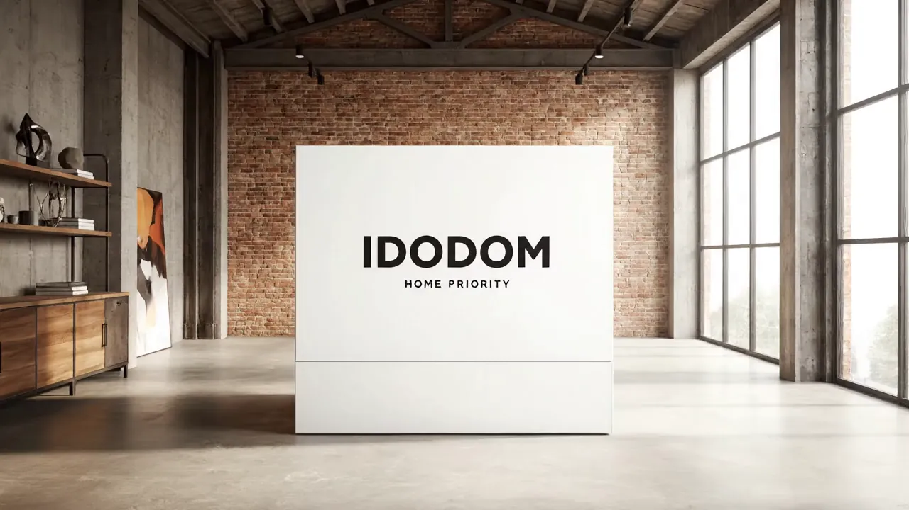
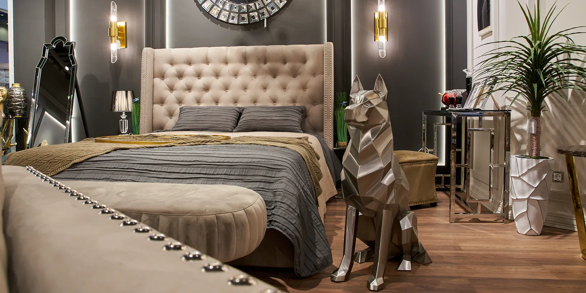
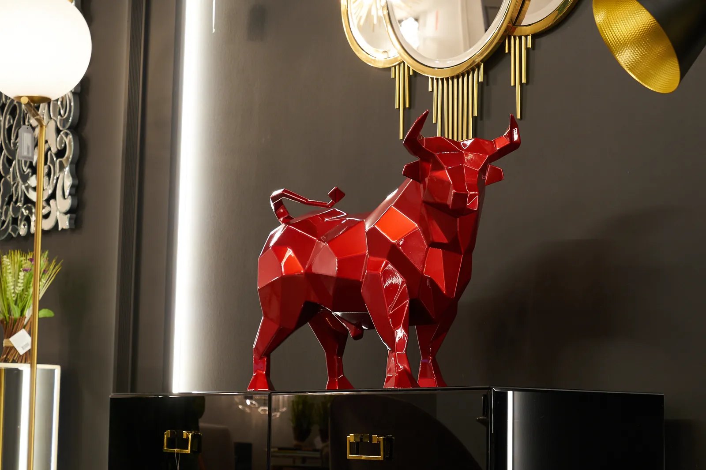
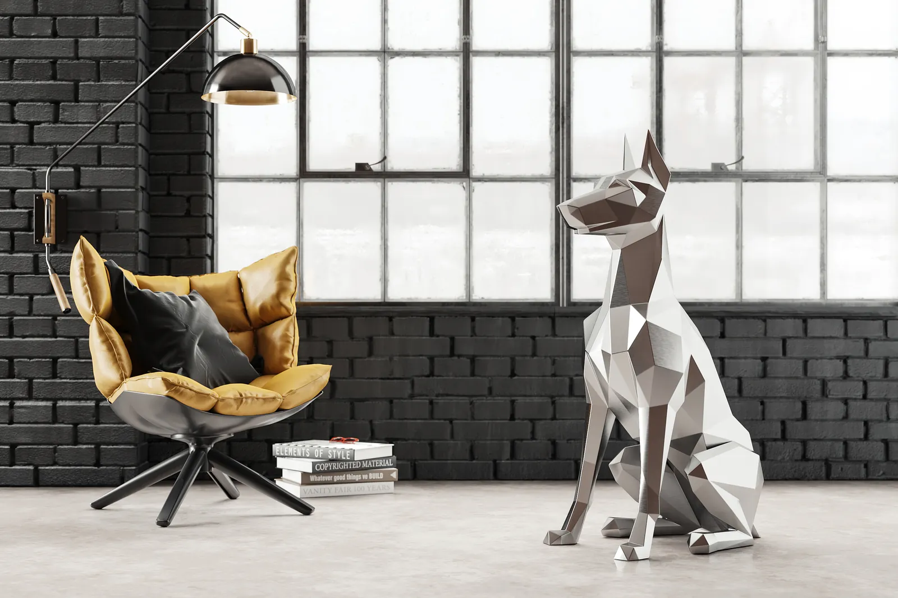

Анна Морозова
Руководитель проектов

О НАС
IDODOM — пространство современной мебели и предметов для интерьера. Более 10 лет мы отбираем премиальные бренды мебели и предметы интерьера: следим за трендами, но не жертвуем функциональностью.

Наш принцип: лучшие товары — те, которые мы сами хотели бы купить. Поэтому мы внимательно подбираем поставщиков.
Сотрудники IDODOM проходят долгое обучение — команда для нас часть компании. Мебель на заказ: после заказа менеджер уточнит цвет, материал и размеры, затем — оплата и изготовление.
Доставляем по всей России. Шоурум — в Москве, в МЦ «Гранд-2», на первом этаже.
Москва, МЦ «Гранд-2», первый этаж
БРЕНДЫ
Имена и должности — временные примеры.
Фотографии и настоящий состав команды добавим позже.
Руководитель проектов
Дизайнер интерьеров
Эксперт по коллекциям
Консультант шоурума
Координатор проектов
Специалист по материалам
БЛОГ IDODOM
Статьи о предметах, материалах и уходе.

СтатьиПочему фигура быка веками означает силу и достаток и как металлическая скульптура работает в современном интерьере.
Читать историю ↗
СтатьиКак подобрать размер, материал и место для гранёной металлической фигуры — дома, в офисе и в саду.
Читать историю ↗ Статьи
СтатьиКак сохранить форму, чехол и наполнитель мягкой мебели без каркаса: ежедневный уход, чистка и хранение.
Читать историю ↗